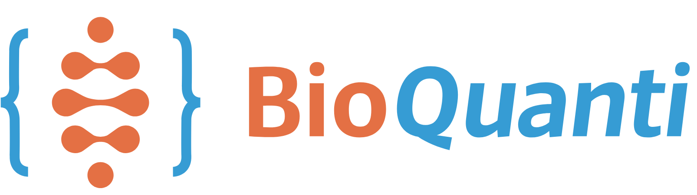

Launched in October 2022, the Bioquanti website was designed to contribute to reproducible and self-instructional teaching. Reproducible teaching is understood as an active teaching-learning methodology based on programming codes, inherited from Donald Knuth’s concepts of literate programming and reproducible research, and aimed at the production and sharing of dynamic documents and teaching objects. Originally designed for the study of topics in Quantitative Biochemistry with the aid of programming codes, the site now features content for basic education, also based on programming languages.
In general, the website addresses the use of four programs, two developed at UNIFAL-MG: JSPlotly for interactive graphics and AI simulation, and SISMA for dynamic observation of the structure and interaction of elements in networks. The other open-source programs include the use of the R & RStudio platform for graphics, analysis, tables, simulations, and animations, and Jmol for the study and three-dimensional visualization of atomic models. Part of the detailed content of the portal, as well as its application to higher education, can be viewed in an article in the Journal of Biochemistry Education.
Essentially, the website aims to provide tools and tutorials for the use of computational thinking focused on programming logic with the help of programming languages, directly applied to curriculum content through the execution, modification, and creation of codes for the construction and study of interactive objects for technical and scientific topics.
In short… code for content.
The portal provides access to freely distributed ebooks for studies in biochemistry and related areas, namely: Dynamic Visualization in Catalysis & Metabolism, Quantitative Biochemistry & R, and Jmol-Guided Structural Biochemistry, all with codes for reproduction.
The website also features the ebook Basic Biochemistry, People, Animals, and Plants, a basic text for undergraduate students in the field, for reference on various topics, but without code.
For basic education, we suggest taking a look at the ebook Vivificando Conteúdos para o Ensino Básico, an adaptation of part of the website’s content for a smooth learning curve of Jmol and R & RStudio, directly applied to the construction of reproducible interactive teaching objects (RITO) for school content.
Recognition
The website was awarded 2nd place in the Bayardo Baptista Torres National Award for Teaching Biochemistry and Molecular Biology, held every two years since 2017 by the Brazilian Society of Biochemistry and Molecular Biology (SBBq, 2023), and is referenced as an open educational resource on the eduCAPES portal. Recently, a portable application for graphic and interactive simulation available on the website, JSPlotly, was awarded first place in the same award and is also available on eduCAPES. With equal honor and satisfaction, we also had works classified in the National Award in its previous editions, this time for experimental work in teaching and learning.
Bioquanti currently offers topics for higher education in biochemistry, although due to its quantitative nature, it also includes content on physical chemistry, chemistry, biophysics, descriptive and inferential statistics, experimental design, linear algebra, integral calculus, differential calculus, and computational modeling, among others; The language is geared toward university professors and researchers, as well as undergraduate and graduate students.
Bioquanti for elementary and secondary education
For elementary and secondary education, the website offers a set of instructional content and teaching objects for the last years of elementary school and high school. Its content was also designed according to the principles of reproducible teaching (RT) and involves interactive teaching objects for curricular content (RITO).
In this sense, the website presents applications of the JSPlotly (simulator) and GSPlotly (code generator) platforms directly aimed at basic education content. The website also has a practical tutorial on using Jmol for 3D molecules and interactivity, and another for R in the RStudio environment for interactive graphics and maps. The tools are presented in their cloud versions, eliminating the need for installation or configuration, although there are instructions for installing the program on a computer. The tutorial is illustrated with examples taken from MAPA (Pedagogical Support Material for Learning in Minas Gerais - Brazil). The portal also provides a collection of interactive atomic models included in a “Molecule Garden” and a repository for interactive graphics and maps such as RITOs. The Molecule Garden is organized into classes and has a collection of atomic models for three-dimensional visualization and study.